<!DOCTYPE html>
<html lang="en">
  <head>
    <meta charset="UTF-8" />
    <meta name="viewport" content="width=device-width, initial-scale=1.0" />
    <title>Document</title>
    <link rel="stylesheet" href="style.css" />

    <script src="https://cdn.jsdelivr.net/npm/animejs@3.2.1/lib/anime.min.js"></script>
    <script src="script.js" defer></script>
  </head>
  <body>
    <div id="mapContainer">
      <svg
        id="svg"
        class="svg"
        xmlns="http://www.w3.org/2000/svg"
        viewBox="0 0 1920 1080"
        preserveAspectRatio="xMidYMin meet"
      >
        <defs>
          <linearGradient id="gradient_up" x1="0%" y1="100%" x2="0%" y2="0%">
            <stop offset="0%" style="stop-color: #f00; stop-opacity: 0.3" />
            <stop offset="100%" style="stop-color: #f00; stop-opacity: 1" />
          </linearGradient>
          <linearGradient id="gradient_right" x1="0%" y1="0%" x2="100%" y2="0%">
            <stop offset="0%" style="stop-color: #f00; stop-opacity: 0.3" />
            <stop offset="100%" style="stop-color: #f00; stop-opacity: 1" />
          </linearGradient>
          <linearGradient id="gradient_down" x1="0%" y1="0%" x2="0%" y2="100%">
            <stop offset="0%" style="stop-color: #f00; stop-opacity: 0.3" />
            <stop offset="100%" style="stop-color: #f00; stop-opacity: 1" />
          </linearGradient>
          <linearGradient id="gradient_left" x1="100%" y1="0%" x2="0%" y2="0%">
            <stop offset="0%" style="stop-color: #f00; stop-opacity: 0.3" />
            <stop offset="100%" style="stop-color: #f00; stop-opacity: 1" />
          </linearGradient>
          <linearGradient id="gradient_test" x1="100%" y1="0%" x2="0%" y2="0%">
            <stop
              offset="0%"
              style="stop-color: rgb(0, 255, 68); stop-opacity: 0.3"
            />
            <stop
              offset="100%"
              style="stop-color: rgb(0, 255, 68); stop-opacity: 1"
            />
          </linearGradient>
          <!-- circle gradient -->
          <radialGradient
            id="radial1"
            cx="50%"
            cy="50%"
            r="50%"
            fx="50%"
            fy="50%"
          >
            <stop offset="0%" style="stop-color: #f00; stop-opacity: 1" />
            <stop offset="100%" style="stop-color: #f00; stop-opacity: 0" />
          </radialGradient>
        </defs>
        <path
          id="path1"
          class="up"
          d="m1053.19,697.66s93.2-95.72,90.64,-301.28"
        />
        <path
          id="path2"
          class="up"
          d="m898.89,771.59s-74.89-256.06,72.57-472.87"
        />
        <path
          id="path3"
          class="up"
          d="m1053.19,697.66s-93.2-95.72,90.64-301.28"
        />
        <path
          id="path4"
          class="up"
          d="m898.89,771.59s-174.89,-356.06,72.57-472.87"
        />
        <path
          id="path5"
          class="up"
          d="m1053.19,697.66s123.2-95.72,90.64-301.28"
        />
        <path
          id="path6"
          class="up"
          d="m898.89,771.59s-74.89-56.06,72.57-472.87"
        />
        <!-- <circle id="out1" cx="1053.19" cy="697.66" />
      <circle id="out2" cx="898.89" cy="771.59" />
      <circle id="out3" cx="1053.19" cy="697.66" />
      <circle id="out4" cx="898.89" cy="771.59" />
      <circle id="out5" cx="1053.19" cy="697.66" />
      <circle id="out6" cx="898.89" cy="771.59" /> -->
        <circle id="in1" cx="1143.83" cy="396.38" />
        <circle id="in2" cx="971.46" cy="298.72" />
        <circle id="in3" cx="1143.83" cy="396.38" />
        <circle id="in4" cx="971.46" cy="298.72" />
        <circle id="in5" cx="1143.83" cy="396.38" />
        <circle id="in6" cx="971.46" cy="298.72" />
      </svg>
      <!--  -->
    </div>
  </body>
</html>
